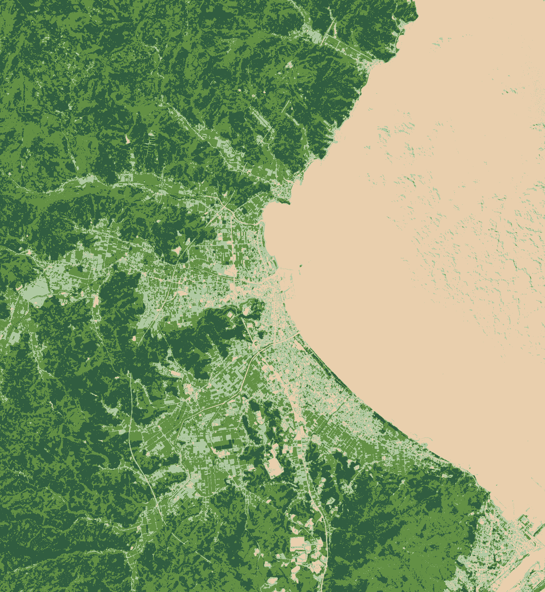

Forest Water Yield Report
衛星画像（Sentinel-2 / Copernicus）と林野庁簡易評価法（Ver.1.0, 令和8年3月公開）による AOI 16km × 14km の森林の年間水資源涵養量の定量評価。
Annual Water Yield
約 1.19億トン／年
119,115,675 m³／年（信頼幅 ±30%：8,300万トン〜1億5,500万トン）
一般家庭約 160 万世帯の年間生活用水に相当
富山県氷見市周辺の AOI（16km × 14km、合計面積 22,400 ha）には、衛星画像から判定された 森林が 12,398 ha（55.3%） 存在する。この森林が年間の降水量から 直接流出と蒸発散を差し引いた残り、つまり地下水・基底流量として下流に供給する量を 試算したところ、 年間 約 1.19 億トン（961 mm／年） となった。
年降水量
2,331mm/年
NASA POWER 2020-2024 平均
水資源涵養量
961mm/年 (41.2%)
林地ベース
蒸発散量
837mm/年 (35.9%)
蒸散＋遮断
解析対象 AOI
富山県氷見市 / 日本海側多雨地域
Sentinel-2 NDVI（2026-03-17）

濃緑＝高NDVI（活発な植生）／薄緑＝中程度／土色＝裸地・低植生
雲量 3.7%、Sentinel-2A 観測
年降水量 2,331 mm の行き先
Sentinel-2 の 5 年分の観測データ（71 観測点）を CDSE Statistical API で集計。 季節周期（春〜夏ピーク、冬期低下）と年次変化が明確に捉えられている。 NDVI 0.5 を森林閾値とし、夏期ピーク時のラスタから森林面積を算定した。
林野庁が令和8年3月に公開した 「林地における水資源涵養量（貯留機能）の簡易評価法 Ver.1.0」 に準拠。インプットはすべて公開データから自動取得した。
| 項目 | 値 | 出典 |
|---|---|---|
| 月別気温・降水量 | T=16.0°C, P=2,160 mm/年 | NASA POWER monthly（2020-2024平均） |
| 降水量観測点標高 | 2.9 m | 国土地理院 5m DEM API |
| 対象林地標高 | 171.5 m | 国土地理院 5m DEM API |
| 地質区分 | 第三紀（新第三紀 中新世） | 産総研 シームレス地質図 v2 API |
| 林地タイプ | 常緑針葉樹（スギ・ヒノキ主体） | Sentinel-2 NDVI 季節パターン |
| 森林面積 | 12,398 ha | Sentinel-2 L2A NDVI > 0.5 (Hansen 2013) |
| 立木密度 | 783 本/ha | 林野庁 標準値（中老齢 sugi/hinoki） |
| 平均胸高直径 (DBH) | 32 cm | 林野庁 収穫予想表 中位（50-70年生） |
| 平均樹高 | 18 m | 同上 |
| 項目 | 値 | 補足 |
|---|---|---|
| P（補正後の年降水量） | 2,331 mm/年 | 標高補正後 |
| P_eve（イベント積算） | 1,370 mm/年 | 回帰式変換 |
| Q（直接流出量） | 533 mm/年 | 第三紀地質 ≤1306 mm 帯 |
| 蒸散量 | 453 mm/年 | 単木式 × 立木密度 × 12ヶ月 |
| 遮断量 | 384 mm/年 | 針葉樹遮断率 |
| 蒸発散量合計 | 837 mm/年 | 蒸散 + 遮断 |
| 水資源涵養量 | 961 mm/年 | 降水量の 41.2% |
3.3 で得た 1 ha あたりの値を、Sentinel-2 で実測した森林面積（12,398 ha）に乗じることで AOI 全体の年間水資源涵養量を算定する。
※ 本レポートは、林野庁の公式評価式に準拠した第三者試算であり、林野庁・農林水産省による 公式認証データではありません。J-クレジット制度上の水資源涵養量クレジット創出は、別途 正式なモニタリング・第三者検証の手続を経て実施されます。 本レポートに含まれるすべての数値は推定値であり、商業契約上の保証を伴うものではありません。